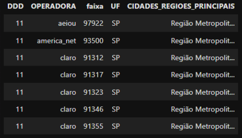

Tratamento de telefones
Breve história da telefonia brasileira
Antes de detalhar essas estratégias, é importante contextualizar a história da telefonia no Brasil. Em 27 de agosto de 1962, foi promulgada a Lei 4.117, o Código Brasileiro de Telecomunicações. Essa lei viabilizou a criação do Sistema Nacional de Telecomunicações, em resposta ao crescimento do número de telefones no país, que já ultrapassava 1 milhão de linhas.
Com a evolução tecnológica e o surgimento de novas empresas, a demanda por serviços de telefonia aumentou consideravelmente. A empresa pública responsável pelo setor não conseguia mais atender a essa demanda crescente. Por isso, em 1998, houve a privatização da estatal brasileira de telefonia, marcando um período de expansão significativa nos registros telefônicos. Vale destacar que, já na década de 1990, os primeiros modelos de telefones celulares surgiram, impulsionando o crescimento da telefonia móvel. Esse cenário levou à criação da Agência Nacional de Telecomunicações (ANATEL), responsável por regular as empresas de telecomunicações no país e estabelecer as regras para a composição dos números de telefones fixos e celulares. Com o aumento da demanda por números de telefones fixos e móveis, ocorreram diversas mudanças nas regras. Vou destacar algumas dessas mudanças e explicar como as regras atuais podem ser utilizadas para melhorar a qualidade dos nossos contatos telefônicos.
Telefone Fixa
• Código do País: 55
• Código de Área: Varia entre 11, 12, 13, 14... até 98, 99
• Número do Assinante: Pode ser 2XXX-XXXX; 3XXX-XXXX; 4XXX-XXXX; 5XXX-XXXX
Considerando que a utilização dos dígitos 2, 3, 4 e 5 já é uma regra consolidada e não sofreu mudanças significativas, vamos adotar a estrutura acima como padrão para telefones fixos. Portanto, um telefone fixo pode ter 2 dígitos de código de área e do país, e 8 dígitos de número de telefone, totalizando 12 dígitos com o código do país e 10 dígitos sem o código do país. Observação: se considerarmos que o DDD inicia com 0, a quantidade de dígitos varia de 10 para 11.
Serviço Telefônico Fixo Comutado
| CNG | CÓDIGO DE ÁREA | SERVIÇO |
|---|---|---|
| 0 800 ABC MCDU | TODAS AS ÁREAS | CHAMADAS FRANQUEADAS |
| 0 300 ABC MCDU | TODAS AS ÁREAS | CHAMADAS COM TARIFA COMPARTILHADA |
| 0 500 ABC MCDU | TODAS AS ÁREAS | CHAMADAS PARA DOAÇÕES A INSTITUIÇÕES DE UTILIDADE PÚBLICA |
| 0 900 ABC MCDU | TODAS AS ÁREAS | SERVIÇOS DE VALOR ADICIONADO |
Telefone Celular
Essa abertura de exceção para o DDD 11 possibilitou a criação de aproximadamente 6,9 milhões de novos números. Antes dessa mudança, a região do DDD 11 já tinha a capacidade para 37 milhões de telefones móveis. Com essa alteração, a capacidade aumentou para até 43,9 milhões de números. Esta medida foi provisória e durou até 2012, quando o nono dígito foi implementado no DDD 11.
O processo de adição do nono dígito em telefones móveis começou em julho de 2012 e foi concluído em novembro de 2016. Segue abaixo o cronograma de implementação por DDDs:
• 29 de julho de 2012: DDD 11
• 25 de agosto de 2013: DDDs 12, 13, 14, 15, 16, 17, 18 e 19
• 27 de outubro de 2013: DDDs 21, 22, 24, 27 e 28
• 2 de novembro de 2014: DDDs 91, 92, 93, 94, 95, 96, 97, 98 e 99
• 31 de maio de 2015: DDDs 81, 82, 83, 84, 85, 86, 87, 88 e 89
• 11 de outubro de 2015: DDDs 31, 32, 33, 34, 35, 37, 38, 71, 73, 74, 75, 77, 79
• 29 de maio de 2016: DDDs 61, 62, 63, 64, 65, 66, 67, 68 e 69
• 6 de novembro de 2016: DDDs 41, 42, 43, 44, 45, 46, 47, 48, 49, 51, 53, 54, 55
Com essas alterações, os números de telefone celular passaram a ter a seguinte composição:
• Código do País: 55
• Código de Área (DDD): Varia entre 11, 12, 13, 14... até 98, 99
• Número do Assinante: 9XXXX-XXXX
Portabilidade
 Com a portabilidade, os usuários podem manter seus números ao mudar de localização ou operadora dentro da mesma área de serviço, o que alterou a relação direta que existia entre o número de telefone e a localização geográfica ou operadora.
Com a portabilidade, os usuários podem manter seus números ao mudar de localização ou operadora dentro da mesma área de serviço, o que alterou a relação direta que existia entre o número de telefone e a localização geográfica ou operadora.
Em 2007, foi introduzido a portabilidade de números entre operadoras de telefonia móvel. O objetivo dessa ação era permitir que os usuários mantivessem seus números ao trocar de operadora, incentivando a competição.
Infelizmente, não encontrei informações concretas, mas recebi a sugestão de consultar o site: Consulta Portabilidade
Após refletir sobre o assunto, cheguei às seguintes considerações:
-
A principal informação afetada pela portabilidade é a identificação da operadora. No entanto, a capacidade de distinguir entre telefones celulares e fixos permanece intacta.
-
Atualmente, a telefonia móvel no Brasil conta com 253 milhões de telefones celulares. As maiores operadoras são Vivo (38,6%), Claro (33,6%) e Tim (24,2%).
-
Em 2022, registramos 7 milhões de números que passaram por portabilidade. Já de janeiro a outubro de 2023, foram apenas 4,7 milhões de pedidos de portabilidade.
-
Considerando esses números, estimo que a portabilidade representa cerca de 2% a 5% do total de telefones celulares registrados. Estatisticamente, o impacto gerado pela portabilidade é relativamente baixo. Por isso, vejo isso como um "erro da vida" que está dentro da margem do que é aceitável.
Fonte: Números telefonia celular brasileira (Teleco)
Números da Portabilidade da telefonia celular brasileira (Teleco)
Diante das regras para telefones fixos e celulares, identificamos nosso primeiro desafio: a quantidade de dígitos de um telefone fixo ou móvel, em um determinado período, era a mesma. Além disso, durante cerca de 2 a 3 anos, a região com DDD 11 teve números de celular iniciando com o dígito 5.
Quantas combinações podemos em um telefone sabendo as variações existente e que pode ter ou não o DDI e o DDD. Esse é um problema de análise combinatória. Temos duas possibilidades para DDI e DDD, para telefone celular duas possibilidade e fixo uma possibilidade. Abaixo temos um desenho exemplificando a situação
A questão que surge é: como validar um telefone celular no contexto atual, onde os números incluem o DDD mais 9 dígitos? As operadoras de telefonia operam em diferentes bandas, identificáveis pelos primeiros dígitos do número. Abaixo, estão as regras correspondentes a cada banda:
• Banda A: 96 a 99
• Banda B: 91 a 94
• Banda D: 8
• Banda E: 8
• Banda L: 8
Existem algumas exceções:
• Nextel utiliza a série que começa com 7.
• Vivo em São Paulo também utiliza a série 7 (71 a 74) e a 95.
• Vivo no Rio de Janeiro utiliza a série 95.
• Claro no Distrito Federal utiliza a série 95.
Atuação das operadoras por Banda*
| Estado (DDD) | Banda A (96 a 99) | Banda B (91 a 94) | Banda D (8) | Banda E (8) |
|---|---|---|---|---|
| RJ, ES (21 a 28) | Vivo | Claro | Oi 87 a 88 | TIM 80 a 83 |
| Amazônia (91 a 99) | Amazônia Celular | Vivo | Oi 87 a 88 | TIM 80 a 83 |
| MG (31 a 38) | Telemig Celular | TIM | Oi 87 a 88 | Claro 81 a 84 |
| BA, SE (71 a 79) | Vivo | TIM | Oi 87 a 88 | Claro 81 a 83 |
| Nordeste (81 a 89) | TIM | Claro | Oi 87 a 88 | Vivo |
| PR, SC (41 a 49) | TIM | Vivo | Claro 87 a 88 | Brasil Telecom 84 a 85 |
| RS (51 a 55) | Vivo | Claro | TIM 81 a 82 | Brasil Telecom 84 a 85 |
| Centro Oeste (61 a 69) | Vivo | Claro | TIM 81 a 82 | Brasil Telecom 84 a 85 |
| SP (11 a 19) | Vivo* | Claro* | TIM 81 a 87 | Oi |
| Operadora | Cidades |
|---|---|
| TIM | São Paulo (6340-6369, 7011-7051 e 7950-7967) |
| TIM | Pelotas e região RGS (9911-9939) |
| TIM | Londrina e Tamarana, PR, área 43 (81) |
| TIM | Nordeste (8719-8721 e 88) |
| Claro | São Paulo (6310-6339, 6589-6599, 7052-7062, 76, 8800-8899, 89, 91, 92, 93 e 94) |
| Claro | Rio de Janeiro (74, 75 e 76) |
| Claro | Centro Oeste (9551-9559 e 9981-9989) |
| Claro | Amazônia (84) |
| Vivo | São Paulo (6057-6060, 6193-6199, 6370-6499, 7099, 71, 72, 73, 74, 75, 95) |
| Vivo | Rio de Janeiro (71, 72 e 95) |
| Vivo | RGS (95) |
| Vivo | Nordeste (8100-82000) |
| Oi | São Paulo (6100-6193, 6299, 65, 6651-6799, 68, 6999, 7971-7999, 80 e 8814-8899) |
| Oi | Rio de Janeiro (84, 85, 86 e 89) |
| Oi | Minas Gerais (85, 86 e 89) |
| Oi | Nordeste (84, 85 e 86) |
| Oi | BA e SE (86) |
| BrT | Centro Oeste (86) |
| Algar | Minas Gerais (96, 9960-9979 e 9991-9999) |
| Algar | São Paulo (99, onde a Vivo não está) |
| Algar | Centro Oeste (99, onde a Vivo não está) |
| Sercomtel | Londrina e Tamarana, PR (9941-9998) |
| Unicel | São Paulo (7900-7949) |
Atualmente, as empresas de telecomunicações operam com base em bandas específicas e, dentro dessas bandas, possuem uma faixa numérica específica para criar números de telefone. Esta faixa é definida pelos primeiros 5 dígitos do número. Por exemplo, uma operadora que opera na faixa entre 99941-99998 pode criar números como 99942-8621, 99998-8542, 99968-2465, entre outros milhares de combinações.
Para informações atualizadas sobre DDDs e as frequências numéricas em que cada operadora atua, o site https://www.teleco.com.br/num_cel.asp é uma fonte valiosa. Essas informações, obtidas da ANATEL, são públicas. Continuo na busca por esses dados em fontes oficiais e já entrei em contato com a Agência para automatizar esse processo, dada a utilidade e riqueza dessa informação.
Elaborei uma tabela completa com todas as possibilidades de números de telefone de todas as operadoras, incluindo identificação por estado e região. É importante notar que esta tabela não inclui a extinta Oi Móvel.
Fluxograma para tratar telefone
Fluxograma para tratar telefone
Obs: Diagrama no formato drawio
Tabelas com DDD, UF, Região e Operadora
TABELAS PARA VALIDAÇÃO DE TELEFONE

Tratamento do telefone da base da Receita Federal
Referências
História da Telefonia no Brasil - SMD Soluções
O que muda na Oi Móvel - Oi
Resolução 749 da ANATEL
Tabela de Serviço Telefônico Fixo Comutado - ANATEL
Plano de Numeração Brasileiro - ANATEL
Tabela de Serviço Móvel Celular - ANATEL
Numeração de Celulares no Brasil - Teleco
Números de Telefone no Brasil - Wikipedia
Prefixos e Sufixos da Telefonia Brasileira - Nvoip
Áreas Tarifárias - ANATEL
Códigos Nacionais de Serviços de Utilidade Pública e de Emergência - ANATEL
Informações sobre o Nono Dígito - ANATEL
Painel de Áreas Tarifárias - ANATEL